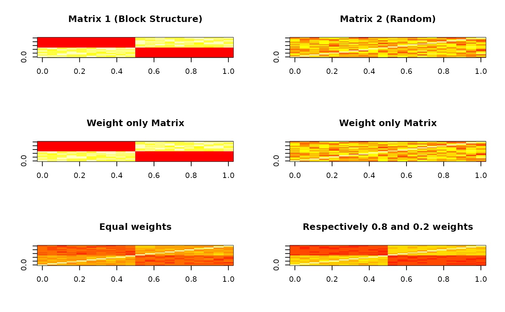

Similarity Network Fusion (SNF) takes multiple views of a network and fuses them together to construct a unified similarity matrix. Each affinity matrix can be assigned a weight to control its relative contribution to the final fused matrix. This approach enables combining information from multiple data types or networks, preserving complementary structures across views.
Source
This function is derived from the SNFtool::SNF() function, with the
addition of the weights argument.
Wang B, Mezlini A, Demir F, Fiume M, Tu Z, Brudno M, Haibe-Kains B, Goldenberg A (2021). SNFtool: Similarity Network Fusion. R package version 2.3.1, https://CRAN.R-project.org/package=SNFtool.
Arguments
- Wall
List of affinity matrices (
list). Each element of the list is a square, symmetric matrix that shows affinities of the data points from a certain view. If only one matrix is provided, the function returns the unique input matrix.- K
Number of neighbors in K-nearest neighbors (
integer). Default is20.- t
Number of iterations for the diffusion process (
integer). Default is20.- weights
Numeric vector of non-negative values of length equal to
length(Wall), specifying the relative weights for each affinity matrix in the fusion process (internally normalized to sum to 1) (numericvector). Matrices with a weight of 0 are excluded from the fusion. If only one matrix has a non-zero weight, the function returns that matrix unchanged. Defaults to equal weights for all matrices.
Value
An overall status matrix derived, unified similarity graph of all data types. It contains both complementary information and common structures from all individual network.
If only one matrix is provided (Wall), the function returns the unique input matrix.
References
Wang B, Mezlini AM, Demir F, Fiume M, Tu Z, Brudno M, Haibe-Kains B, Goldenberg A. Similarity network fusion for aggregating data types on a genomic scale. Nat Methods. 2014 Mar;11(3):333-7. doi: 10.1038/nmeth.2810.
Concise description of SNF can be found here: http://compbio.cs.toronto.edu/SNF/SNF/Software.html
Examples
set.seed(123) # For reproducibility
# Number of samples
n <- 20
# Generate the first affinity matrix: block diagonal structure
block1 <- matrix(rnorm(n * n / 4, mean = 1, sd = 0.1), n / 2, n / 2)
block2 <- matrix(rnorm(n * n / 4, mean = 1, sd = 0.1), n / 2, n / 2)
A1 <- rbind(cbind(block1, matrix(0, n / 2, n / 2)), cbind(matrix(0, n / 2, n / 2), block2))
A1 <- A1 + diag(n) # Add self-similarity (diagonal dominance)
# Generate the second affinity matrix: random similarity matrix
A2 <- matrix(runif(n * n, min = 0, max = 1), n, n)
A2 <- (A2 + t(A2)) / 2 # Make it symmetric
A2 <- A2 + diag(n) # Add self-similarity (diagonal dominance)
# Normalize rows to sum to 1 (transition matrices)
A1 <- A1 / rowSums(A1)
A2 <- A2 / rowSums(A2)
# Create a list of affinity matrices
affinity_list <- list(A1, A2)
# Visualize the matrices
par(mfrow = c(3, 2))
matSNF1 <- weightedSNF(affinity_list, K = 10, weights = c(1, 0))
matSNF2 <- weightedSNF(affinity_list, K = 10, weights = c(0, 1))
matSNF3 <- weightedSNF(affinity_list, K = 10, weights = c(1, 1))
matSNF4 <- weightedSNF(affinity_list, K = 10, weights = c(0.8, 0.2))
# Set common breaks to get the same color scale for all
breaks <- quantile(c(A1, A2, matSNF1, matSNF2, matSNF3, matSNF4), seq(0, 1, 0.1))
image(A1, main = "Matrix 1 (Block Structure)", col = heat.colors(10), breaks = breaks)
image(A2, main = "Matrix 2 (Random)", col = heat.colors(10), breaks = breaks)
image(matSNF1, main = "Weight only Matrix", col = heat.colors(10), breaks = breaks)
image(matSNF2, main = "Weight only Matrix", col = heat.colors(10), breaks = breaks)
image(matSNF3, main = "Equal weights", col = heat.colors(10), breaks = breaks)
image(matSNF4, main = "Respectively 0.8 and 0.2 weights", col = heat.colors(10), breaks = breaks)
